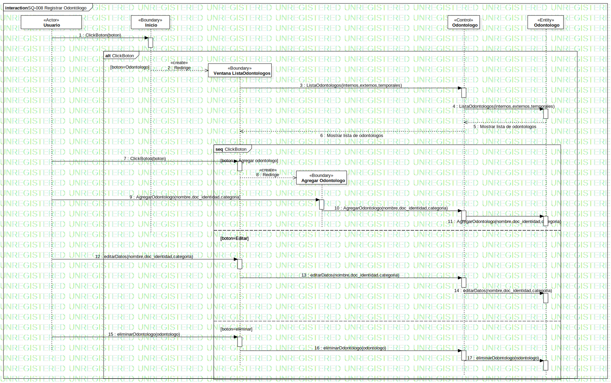

SQ-008 Registrar Odontólogo
UMLInteraction
Dentware
::
Modelo de diseño
::
Modelo de interacción
::
SQ-008 Registrar Odontólogo
Description
none
Diagrams

SQ-008 Registrar Odontólogo
Fragments
ClickBoton
ClickBoton
Participants
«Actor»Usuario
«Boundary»Inicio
«Control»Odontologo
«Entity»Odontologo
«Boundary»Ventana ListaOdontologos
«Boundary»Agregar Odontologo
Messages
ClickBoton (Usuario→Inicio)
Redirige (Inicio→Ventana ListaOdontologos)
ListaOdontologos (Ventana ListaOdontologos→Odontologo)
ListaOdontologos (Odontologo→Odontologo)
Mostrar lista de odontologos (Odontologo→Odontologo)
Mostrar lista de odontologos (Odontologo→Ventana ListaOdontologos)
ClickBoton (Usuario→Ventana ListaOdontologos)
Redirige (Ventana ListaOdontologos→Agregar Odontologo)
AgregarOdontologo (Usuario→Agregar Odontologo)
AgregarOdontologo (Agregar Odontologo→Odontologo)
AgregarOdontologo (Odontologo→Odontologo)
editarDatos (Usuario→Ventana ListaOdontologos)
editarDatos (Ventana ListaOdontologos→Odontologo)
editarDatos (Odontologo→Odontologo)
eliminarOdontologo (Usuario→Ventana ListaOdontologos)
eliminarOdontologo (Ventana ListaOdontologos→Odontologo)
eliminarOdontologo (Odontologo→Odontologo)
Properties
Name
Value
name
SQ-008 Registrar Odontólogo
stereotype
null
visibility
public
isReentrant
true
Owned Elements
SQ-008 Registrar Odontólogo